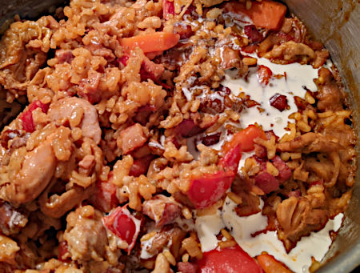

| Zutaten für 4-6 Personen: | |
| 1 kg | Pouletstücke |
| 1 EL | Paprika |
| 1/2 TL | Salz |
| 1 TL | Streuwürze |
| 1 EL | Bratfett |
| 100g | Speckwürfeli |
| 1 | Peperoni |
| 1 | Zwiebel |
| 1 | Knoblauchzehe |
| 200g | Risotto-Reis |
| 5-6dl | Fleischbrühe |
| 1dl | Rahm |
Paprika, Salz und Streuwürze in einen Beutel geben. Eventuell Curry oder Safran zugeben und vielleicht Cyenne Pfeffer für die Schärfe. Mischen.
Die Pouletstücke in den Sack geben und gut schütteln, bis alle Stücke gleichmässig gewürzt sind.
Das Bratfett im Topf erhitzen und die Pouletstücke langsam, während 20 Minuten, goldig braten.
Die Speckwürfeli beifügen und knusprig braten.
Den Peperoni in grosse oder kleine Würfel schneiden.
Zwiebel in kleine Würfel schneiden und den Knoblauch hacken.
Peperoni, Zwiebel und Knoblauch beigeben und bei schwacher Hitze mitdämpfen.
Den Risotto-Reis befügen und glasig dämpfen.
Mit Fleischbrühe ablöschen. Zugedeckt bei schwacher Hitze 15 Minuten schmoren.
Rahm zugeben und je nach Reissorte bis zu 5 Minuten weiterköcheln.
Betty Bossi, Alltagsrezepte mit Pfiff, Seite 96
Beliebtes Familien- und Gästerezept von Sandra's Mutter. Wurde öfters mit Erfolg and Anerkennung gekocht. Gelang auch am 21 Jan 2023 hervorragend.